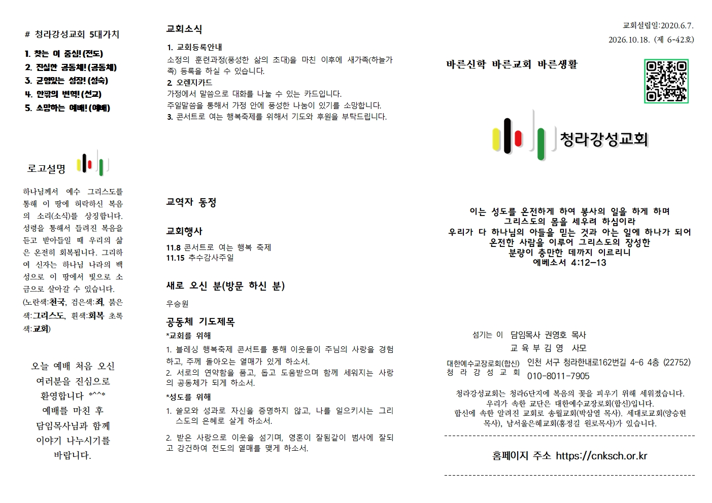
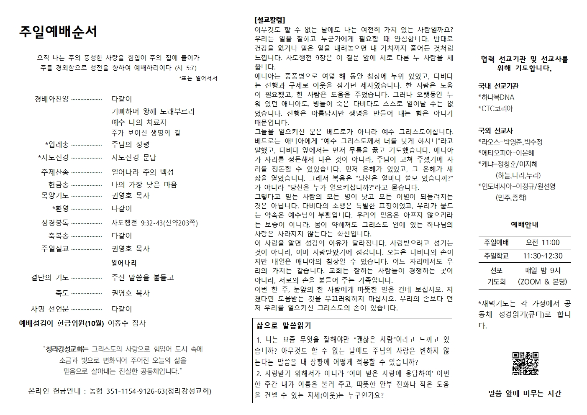

일어나라 · 주보와 설교칼럼
2026년 10월 18일 주간 · 사도행전 9:32–43
이번 주 주보 원본입니다. 두 번째 이미지 가운데에서 설교칼럼을 읽으실 수 있습니다.
주보 첫 면 크게 보기
예배 순서와 설교칼럼 크게 보기
2026년 10월 18일 주간 · 사도행전 9:32–43
이번 주 주보 원본입니다. 두 번째 이미지 가운데에서 설교칼럼을 읽으실 수 있습니다.
주보 첫 면 크게 보기
예배 순서와 설교칼럼 크게 보기